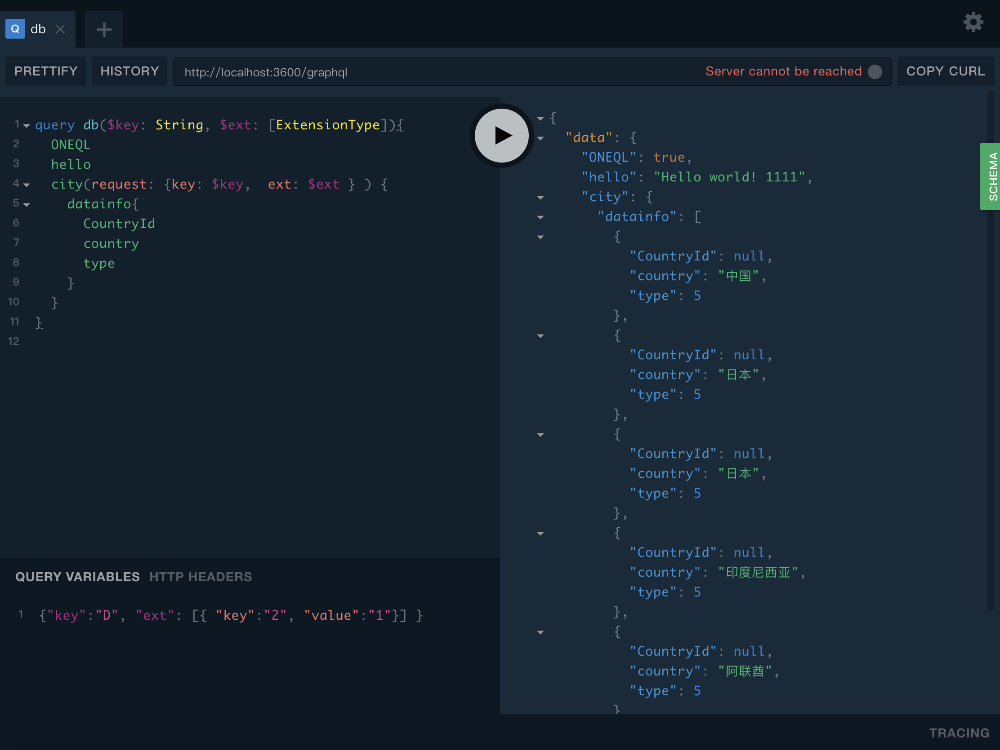
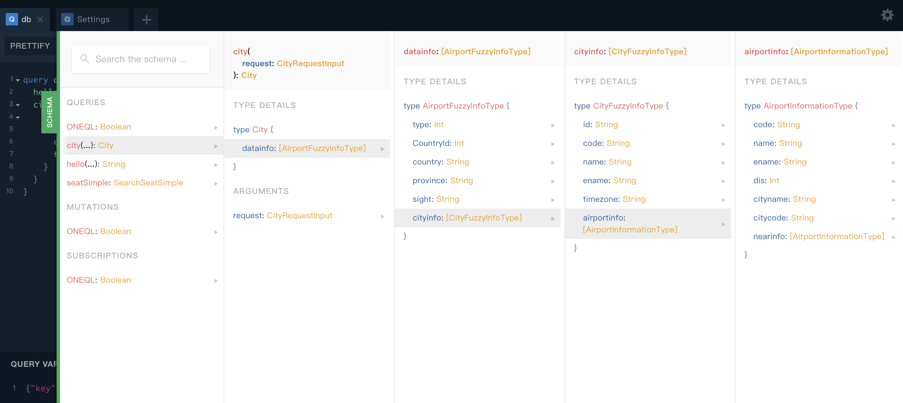

快速开始
# step 1
npm install oneql-init -g
# step 2
oneql-init project
#step 3
cd project && npm install && npm run dev
初始化oneQL (模板已自动生成)
// src/index.ts
import oneql from 'oneql'
import typeDefs from './types'
import resolvers from './resolvers'
new oneql({
schema: {
typeDefs,
resolvers
},
context: async ({ ctx }) => {
return {
ctx
}
}
})
事例查看:
访问：http://localhost:3600/graphql
输入请求schema 和 查询变量, 点击运行
query db($key: String, $ext: [ExtensionType]){
hello
city(request: {key: $key, ext: $ext } ) {
datainfo{
CountryId
country
type
}
}
}
QUERY VARIABLES
{"key":"D", "ext": [{ "key":"2", "value":"1"}] }

查看Schema详情
最右边绿色的SCHEMA 按钮 